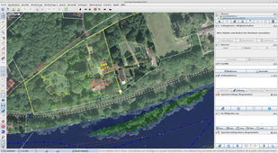
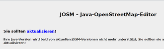
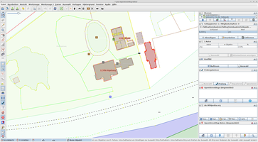
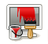

JOSM
Dieser Artikel wurde für die folgenden Ubuntu-Versionen getestet:
Ubuntu 16.04 Xenial Xerus
Ubuntu 14.04 Trusty Tahr
Zum Verständnis dieses Artikels sind folgende Seiten hilfreich:
JOSM  (Java OpenStreetMap Editor) ist ein Offline-Editor für Geodaten, der im Zusammenhang mit dem OpenStreetMap-Projekt entwickelt wurde. Die Software ist in Java programmiert und kann somit unter verschiedenen Betriebssystemen verwendet werden. Weitere Informationen zu JOSM finden sich in der Anleitung für JOSM-Einsteiger
(Java OpenStreetMap Editor) ist ein Offline-Editor für Geodaten, der im Zusammenhang mit dem OpenStreetMap-Projekt entwickelt wurde. Die Software ist in Java programmiert und kann somit unter verschiedenen Betriebssystemen verwendet werden. Weitere Informationen zu JOSM finden sich in der Anleitung für JOSM-Einsteiger  . Die nachfolgende Beschreibung beschränkt sich auf die Installation von JOSM und einige Hinweise zur Konfiguration.
. Die nachfolgende Beschreibung beschränkt sich auf die Installation von JOSM und einige Hinweise zur Konfiguration.
|  |
| JOSM |
Voraussetzungen¶
JOSM ist eine Java-Anwendung und erfordert deshalb die Installation einer Laufzeitumgebung (JRE). Seit Ubuntu 8.04 ist JOSM mit OpenJDK kompatibel.
Online-Nutzung¶
Statt der nachfolgend beschriebenen Installation auf dem eigenen Rechner kann man auch Java Web Start für JOSM verwenden: josm.jnlp  . Dann arbeitet man automatisch immer mit der neuesten Version.
. Dann arbeitet man automatisch immer mit der neuesten Version.
Installation¶
JOSM wird über die offiziellen Paketquellen von Ubuntu bereitgestellt. Nach Installation der Java-Laufzeitumgebung muss daher nur noch das Paket
josm
 mit apturl
mit apturl
Paketliste zum Kopieren:
sudo apt-get install josm
sudo aptitude install josm
installiert [1] werden.
Nach der Installation kann JOSM über
"Anwendungen -> Wissenschaft -> JOSM"
gestartet werden.
Hinweis:
Ein Update von JOSM erscheint etwa monatlich. Es wird deshalb empfohlen, JOSM auf manuellem Weg zu installieren. Die per Paketmanagement verteilte Version kann keine Daten mit OpenStreetMap mehr austauschen!
Fremdquelle¶
Die OpenStreetMap Community bietet eine eigene Paketquelle für Ubuntu-Pakete an.
Um aus der Fremdquelle zu installieren, muss man die folgenden Paketquellen freischalten:
Hinweis!
Zusätzliche Fremdquellen können das System gefährden.
deb http://josm.openstreetmap.de/apt VERSION universe
Um die Fremdquelle zu authentifizieren, kann man
entweder den Signierungsschlüssel herunterladen und in der Paketverwaltung hinzufügen oder folgenden Befehl ausführen:
wget -q http://josm.openstreetmap.de/josm-apt.key -O- | sudo apt-key add -
Da dort bisher keine Quellen verfügbar sind, muss in der Paketverwaltung die Quelltext-Paketquelle (deb-src) deaktiviert werden. Nach dem Aktualisieren der Paketquellen stehen einem zwei Pakete zur Verfügung: josm bezeichnet die offizielle, getestete Version. josm-latest ist die neueste (evtl. fehlerbehaftete) Version.
josm
mit apturl
Paketliste zum Kopieren:
sudo apt-get install josm
sudo aptitude install josm
oder
josm-latest
mit apturl
Paketliste zum Kopieren:
sudo apt-get install josm-latest
sudo aptitude install josm-latest
Manuell¶
Nach Installation der Java-Laufzeitumgebung (s.o.) wird die neueste, stabile (tested) Version als josm-tested.jar heruntergeladen und im Verzeichnis /Downloads im Homeverzeichnis gespeichert.
Hinweis!
Fremdsoftware kann das System gefährden.
Danach kann JOSM mit folgendem Befehl aus einem Terminal [3] heraus gestartet werden:
java -jar ~/Downloads/josm-tested.jar
Menü-Eintrag¶
Um JOSM bequem über das Startmenü [5] aufrufen zu können, sind nur wenige weitere Installationsschritte notwendig. Hierfür sind jeweils Root-Rechte erforderlich. Als erstes wird das Verzeichnis /opt/josm angelegt [6] (siehe auch /opt):
sudo mkdir /opt/josm
Dann wird die zuvor heruntergeladene Datei josm-tested.jar mit folgendem Befehl in das Verzeichnis /opt/josm/ verschoben:
sudo mv ~/Downloads/josm-tested.jar /opt/josm/
Das am Artikelanfang abgebildete JOSM-Logo herunterladen und in josm.png umbenennen. Mit folgendem Befehl nach /usr/share/pixmaps/ verschieben:
sudo mv ~/Downloads/josm.png /usr/share/pixmaps/
Nun kann mit beispielsweise mit Arronax ein Programmstarter [7] angelegt werden.
Name: JOSM
Befehl:
java -jar /opt/josm/josm-tested.jarKommentar: Java OpenStreetMap Editor
Alternativ einen fertigen Programmstarter josm.desktop herunterladen und mit folgendem Befehl in das Verzeichnis /user/share/applications verschieben:
sudo mv ~/Downloads/josm.desktop /usr/share/applications/
Jetzt sollte sich ein neuer Eintrag im Startmenü befinden, über den JOSM nun per Mausklick aufgerufen werden kann. Wenn man josm-latest.jar verwendet, muss noch die Datei usr/share/applications/josm.desktop mit Root-Rechten editiert und folgender Befehl angepasst werden:
Exec=java -jar /opt/josm/josm-tested.jar
Nun startet JOSM aus dem Verzeichnis /opt/josm/.
Unter Unity findet man das Programm nach erfolgreicher Installation auf der Dash-Startseite durch die Eingabe von JOSM. Der Starter kann optional gespeichert werden.
|  |
| Aktualisierung |
Aktualisierung¶
Sobald es eine neue JOSM-Version gibt, wird dies nach dem Start des Editors angezeigt.
Um JOSM zu aktualisieren, muss lediglich die Datei josm-tested.jar neu heruntergeladen und mit Root-Rechten in den Ordner /opt/josm/ verschoben werden (s.o.). Es wird empfohlen, dies regelmäßig durchzuführen. Nach dem Update fragt JOSM beim ersten Start nach einer Plugin-Aktualisierung, die dann ausgeführt werden sollte.
Alternativ kann die Aktualisierung auch mit diesen Befehlen (im Terminal ausführen) ausgeführt werden:
cd /opt/josm sudo wget --timestamping http://josm.openstreetmap.de/download/josm-tested.jar sudo chmod +x josm-tested.jar sudo rm josm.jar sudo ln -s josm-tested.jar josm.jar
Befehl für einen Starter:
java -jar /opt/josm/josm-tested.jar
|  |
| Tracer2Server & JOSM |
Einstellungen und Erweiterungen¶
Um JOSM komfortabel nutzen zu können, sollten nach erstmaligem Programmaufruf noch ein paar Einstellungen vorgenommen und einige Erweiterungen installiert werden, durch die zusätzliche Funktionalitäten bereitgestellt werden. Dazu wird der Menüpunkt "Bearbeiten -> Einstellungen" aufgerufen. Es wird hier vorausgesetzt, dass JOSM manuell installiert wurde (Ver. 3966).
In den Anzeige-Einstellungen wählt man unter dem Reiter "Verhalten und Aussehen" die Einstellung "GTK+" aus.
Unter den Verbindungseinstellungen werden der
OSM-BenutzernameundPassworthinterlegt. Diese Angaben werden für das Hochladen neuer Kartenelemente zum OSM-Server benötigt.Unter "Karteneinstellungen" sollte die Projektionsmethode auf "Merkator" umgestellt werden. Zusätzliche MapPaint-Stile erleichtern die Arbeit im Editor. So kann z.B. Coloured Streets
gewählt werden um Adressen zu bearbeiten.Im Menü "Plugins" muss zunächst die Liste der verfügbaren Erweiterungen auf die entsprechende Schaltfläche geladen werden.
Aus der Liste der verfügbaren Erweiterungen sollten folgende ausgewählt werden:
| Erweiterungen | |
| Name | Beschreibung |
| DirectUpload | GPX-Dateien zum OSM-Server hochladen |
| notes | Hinweise von OpenStreetMap.org einblenden. |
| terracer | Erstellt Reihenhäuser aus einem Häuserblock. |
| Tracer2 | Gebäude und andere Formen von einer Karte abzeichnen. |
Nach Auswahl der Erweiterungen und Bestätigung durch den "OK"-Button ist ein Neustart von JOSM erforderlich.
Tracer2Server¶
Um den Tracer2Server mit JOSM verwenden zu können lädt man sich zuerst den Quellcode herunter [3]:
Erforderlich sind folgende Pakete:
subversion
mit apturl
Paketliste zum Kopieren:
sudo apt-get install subversion
sudo aptitude install subversion
Jetzt kann der Quellcode heruntergeladen werden.
svn checkout http://svn.code.sf.net/p/tracer2server/code/ tracer2server-code
Im nächsten Schritt installiert man die folgenden Pakete [1]:
monodevelop (Entwicklungsumgebung)
mono-complete (Mono-Framework)
mit apturl
Paketliste zum Kopieren:
sudo apt-get install monodevelop mono-complete
sudo aptitude install monodevelop mono-complete
Unter Unity auf der Startseite Monodevlop eingeben.
Anschließend startet man den Server über die IDE MonoDevelop. Über "Datei → Öffnen" navigiert man zur Datei Tracer2Server.csproj , welche sich im Unterordner von ~/tracer2server-code/trunk/src/ befindet. In der ProjektMappe einen  Rechtsklick auf den Tracer2Server ausführen und den Menüpunkt "Optionen" anwählen. Im sich öffnenden Programmfenster wählt man unter " Erstellen → Allgemein" das Ziel-Framework "Mono/.NET 4.0" bzw. "Mono/.NET 4.5" aus. Über "Ausführen → Ausführen" wird der Tracer2Server gestartet und kann in JOSM verwendet werden.
Rechtsklick auf den Tracer2Server ausführen und den Menüpunkt "Optionen" anwählen. Im sich öffnenden Programmfenster wählt man unter " Erstellen → Allgemein" das Ziel-Framework "Mono/.NET 4.0" bzw. "Mono/.NET 4.5" aus. Über "Ausführen → Ausführen" wird der Tracer2Server gestartet und kann in JOSM verwendet werden.
Weitere Informationen sind in der Beschreibung zu Tracer 2 zu finden.

Spracheinstellungen¶
Um die Sprache zu ändern, mit "Edit -> Preferences" das Einstellungsmenü aufrufen. Im Menü den obersten Tab "Display Settings" wählen und dann im Register auf "Look and Feel" klicken. In der Zeile "Language" die entsprechende Sprache wählen. JOSM muss danach neu gestartet werden.
Hintergrundbilder¶
Über den Menüpunkt "Hintergrundbilder" lassen sich Satellitenbilder (NASA LandSat, Yahoo!, u.a.) als Hintergrundbild einblenden, um diese als Vorlage für das Zeichnen von Straßen, Wegen usw. nutzen zu können. Das Einblenden einiger Bildquellen erfordert zusätzlich die Installation [1] des Paketes
gnome-web-photo (universe )
mit apturl
Paketliste zum Kopieren:
sudo apt-get install gnome-web-photo
sudo aptitude install gnome-web-photo
Es muss dann noch im Menü "Bearbeiten -> Einstellungen -> WMS/TMS -> Einstellungen" die Option "gnome-web-photo" in der Auswahlliste gewählt werden. Im Register von JOSM auf "Hintergrundbilder" klicken und z.b. Bing anklicken. Die Bilder werden dann sofort geladen.
Benutzung¶
Die Benutzung von JOSM ist ausführlich im OpenStreetMap-Wiki dokumentiert.
- Erstellt mit Inyoka
-
 2004 – 2017 ubuntuusers.de • Einige Rechte vorbehalten
2004 – 2017 ubuntuusers.de • Einige Rechte vorbehalten
Lizenz • Kontakt • Datenschutz • Impressum • Serverstatus -
Serverhousing gespendet von